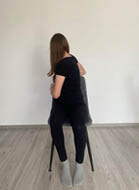
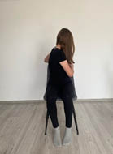
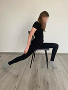

467
5.7. Ćwiczenie 7
Pozycja siedząca. Ruch: wykonaj skręt tułowia w prawo, nie odrywając pośladków od krzesła, a stóp od podłogi. Chwyć oparcie krzesła z prawej strony obiema rękoma, zostań w tej pozycji i wykonaj wdech i wydech. Powtórz na drugą stronę (rycina V.5.9).


Rycina V.5.9.
Skręty tułowia w prawo i w lewo
5.8. Ćwiczenie 8
Pozycja siedzenie na krześle, tak aby jedna noga znajdowała się poza nim. Ruch: siedząc lewym pośladkiem na krześle, skieruj prawą nogę do tyłu, rozciągając przód uda (rycina V.5.10).
Rycina V.5.10.
Rozciąganie mięśnia biodrowo-lędźwiowego


Fizjoprofilaktyka – aktywne przerwy w szkole